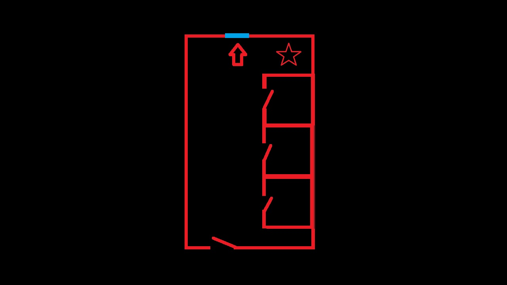
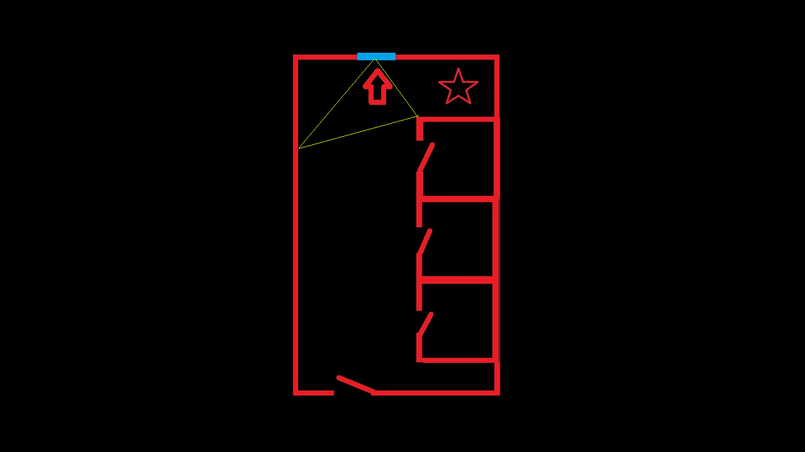
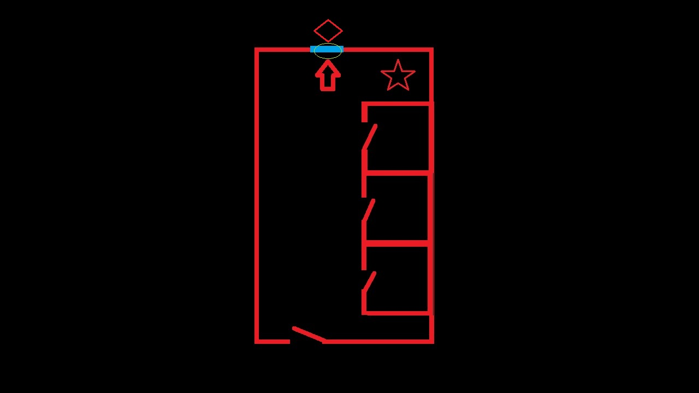

"Entonces que así sea."
"Permíteme darte una ayudita."
"Recordemos. Edd, Mati, Mariso, una persona de la isla y tú entraron por la puerta al sur del diagrama."
"Justo en frente, se encontraba la ventana de la cual cuelga el cuerpo. Más específicamente, el alambre sostiene el cuerpo a la ventana ya que este fue atado a una punta del tejado a través de la ventana."
"Adicionalmente, la investigación muestra que al lado del cuerpo habían objetos como una silla y una bombilla, indicados por la estrella. No se sabe su relación con el asesinato."
"Lo que yo puedo decir, es que como te dije, me proclamo responsable de este caso."
"A ver... según Edd y Mati, Leros entró al baño y se quedó encerrado. Mientras estaba ahi, se supone que Fox de alguna forma lo atrajo a la ventana y alli mismo, con el hilo lo asfixió."
"Hay que tener en cuenta el hecho de que Fox tenga poderes mágicos, pues eso hace que su testimonio pueda ser posible pero a la vez no es fiable porque aprovechandose de ellos, podría haberlo hecho de cualquier otra manera que quisiera."
"De todas maneras, lo de que habian objetos en la escena del crimen llama la atención. Una bombilla y una silla, justo en un lugar donde la luz del techo no funciona."
"Quizás Leros no fue atraído directamente sino que... ¿quería usar esos objetos para arreglar la luz, y en ese instante pasó por la ventana, donde era vulnerable?"
"Todo esto es suponiendo que el culpable haya estado afuera, esperando en la ventana. El problema es que la ventana es estrecha y seria dificil meter tus manos desde ahi."
"Eso... dificulta que se trate de un hecho realista."
Justo cuando pensé que me encontraba en un camino sin salida, recordé las palabras de Nia tras ejercer como fiscal en uno de los juicios, actividad típica de LSDC.
Esto sí que fue un turnabout
Turnabout. Que palabra rara. A veces es traducida como 'caso', pero con Aze siempre creímos que una traducción más literal era... como... ¿'vuelta 360°'?
¡EH! Eso es, solo tengo que darle la vuelta al tablero, y...
"¿Cómo lo habria hecho el culpable si estaba afuera?"
"Meter las manos lo suficiente como para maniobrar el hilo sería un poco imposible, como ya concluí, pero lo que sí puede ocurrir es que el hilo ya esté atravesando la ventana, aunque en ese caso sería un poco inútil."
"Excepto que estuviera siendo tensionado"
"Entonces, quizás no de la manera ilustrada, pero mas o menos colocándo el largo del hilo por entre la zona vulnerable y sostenido por alguien desde la ventana..."
"Al soltarse los puntos desde donde el hilo se estaba sosteniendo del lado de adentro, rápidamente se llevarían a cualquier cosa en su radio hasta la ventana donde estaría el culpable, quien necesitaria aplicar fuerza para tirar de la cuerda, asfixiarlo y que todo esto funcione."
"Esa es una manera en la que un humano podría hacerlo."
"¡Muy bien! Ah, pero, ¿por qué estaría cerrada con llave la puerta?"
"Ah... cierto. No creo que Leros se haya encerrado a si mismo ni que el culpable lo haya hecho, ya que ni siquiera tenía la llave. La tenía..."
"La dependienta. Oh, pero si fueramos a inculparla, eso también sería raro de encajar. Despues de todo, siempre estuvo dentro del local donde estaban Edd y Mati, y el baño no tiene otras entradas aparte de la ventana, ¿verdad?"
"..."
"Eso solo nos deja una respuesta: fue obra de magia."
"E-espera..."
"No te preocupes, has estado tan cerca que te daré otra oportunidad. Pero tú decides si gastarla en seguir este caso desde donde lo dejaste o ir directo al siguiente."
No me podía arriesgar, asi que por ahora, mejor probaría con otro caso.